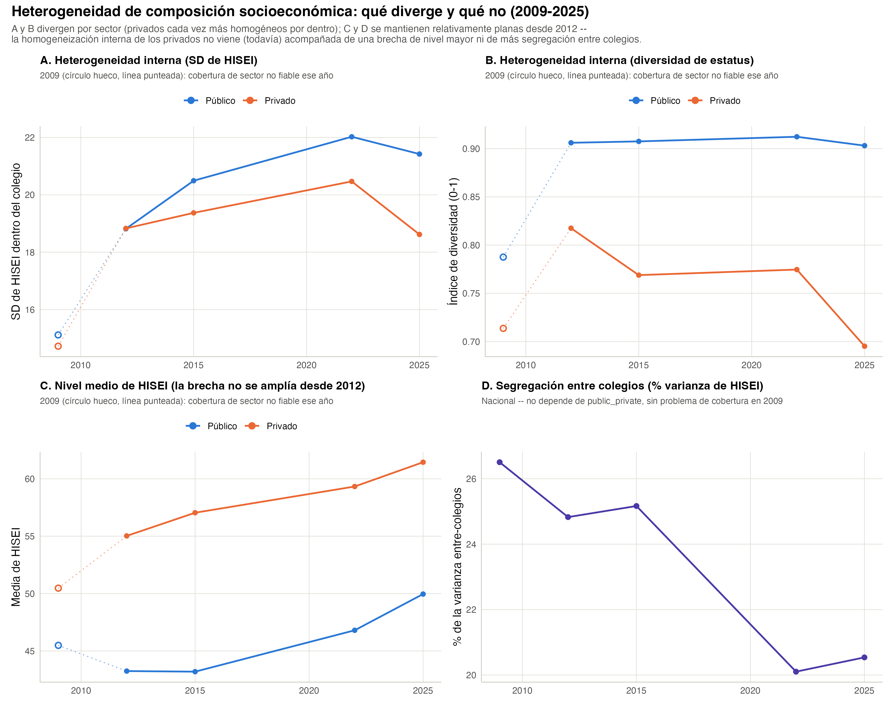
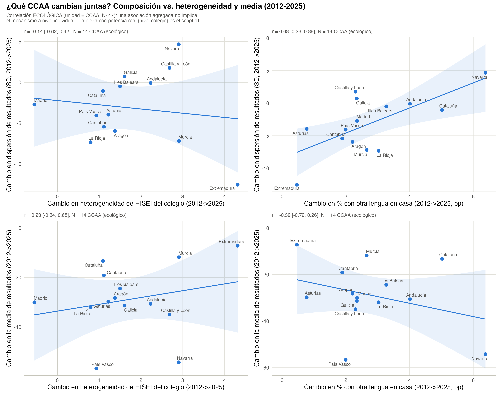
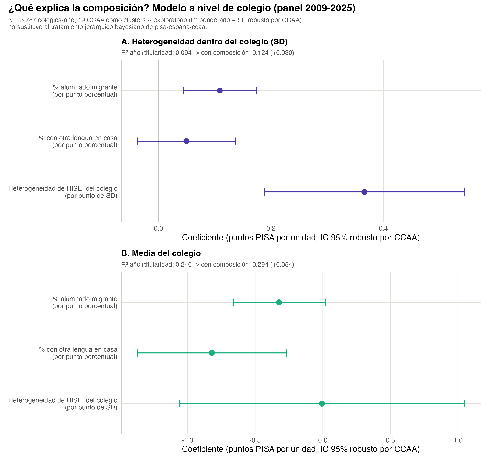

| Año | Nº colegios | SD de HISEI (media) | Diversidad de estatus (media) |
|---|---|---|---|
| 2009 | 837 | 14.83 | 0.76 |
| 2012 | 838 | 18.82 | 0.87 |
| 2015 | 954 | 20.10 | 0.86 |
| 2022 | 927 | 21.45 | 0.86 |
| 2025 | 909 | 20.45 | 0.83 |
3 Heterogeneidad de la composición socioeconómica del colegio
La pregunta de Julián que organiza este capítulo (2026-09-26): la heterogeneidad y la media de resultados han evolucionado en las distintas CCAA y colegios – ¿en qué medida lo explican la migración/lengua (capítulo 2), u otros elementos de composición socioeconómica del colegio? Se aborda en tres piezas de potencia creciente: heterogeneidad de composición en sí misma (04-05), su correlación ECOLÓGICA a nivel de CCAA (09-10, N~14-17) y, con la potencia real, su relación a nivel de COLEGIO (11-12, miles de observaciones). Una cuarta pieza – el tratamiento jerárquico bayesiano riguroso (INLA) – está en pisa-espana-ccaa/R/09_modelo_covariables_colegio.R, no aquí; este capítulo cierra comparando sus conclusiones con las de ese modelo.
3.1 3.1 Heterogeneidad de composición: no solo el nivel medio de HISEI
Dos métricas por colegio (mismo espíritu que la dispersión de resultados del capítulo 1, aplicado ahora a la composición socioeconómica de entrada, no al resultado de salida): la SD ponderada de HISEI dentro del colegio, y un índice de diversidad de estatus laboral (entropía de Shannon normalizada a [0,1]; 0 = todo el alumnado en una sola categoría, 1 = tercio/tercio/tercio).
A diferencia de la dispersión de RESULTADOS (que baja, capítulo 1), la heterogeneidad de COMPOSICIÓN sube: la SD de HISEI dentro del colegio pasa de 14.8 en 2009 a 20.5 en 2025, con un máximo en 2022. Los colegios mezclan hoy más alumnado de distinto origen socioeconómico que en 2009 – justo lo contrario de lo que ha pasado con la dispersión de notas. Esta divergencia entre las dos tendencias es la que motiva mirar si están relacionadas (secciones 3.2 y 3.3): si la composición socioeconómica es cada vez más heterogénea mientras los resultados son cada vez menos dispersos, a priori no es la explicadora principal de la caída de dispersión de resultados – se comprueba con potencia real en la sección 3.3.
El índice de diversidad de estatus laboral solo puede leerse junto a su techo teórico – si la población nacional ya está desequilibrada entre baja/media/alta, ningún colegio puede alcanzar diversidad = 1 aunque mezcle perfectamente el alumnado disponible:
| Año | % baja | % media | % alta | Techo de diversidad |
|---|---|---|---|---|
| 2009 | 18.2 | 57.2 | 24.7 | 0.887 |
| 2012 | 32.3 | 30.3 | 37.4 | 0.996 |
| 2015 | 35.3 | 23.0 | 41.8 | 0.974 |
| 2022 | 31.4 | 23.0 | 45.6 | 0.965 |
| 2025 | 24.3 | 23.1 | 52.7 | 0.928 |
2009 es un caso aparte (población nacional muy desequilibrada hacia “media”, techo de solo 0.89); desde 2012 el techo está siempre por encima de 0,93, así que la diversidad media por colegio (tabla anterior, en torno a 0,83-0,87 desde 2012) está bastante cerca de su máximo alcanzable – los colegios, en conjunto, mezclan casi tanto como la composición nacional permite.
3.2 3.2 Por sector: los colegios privados, cada vez más homogéneos por dentro

Aviso 2009: igual que en el capítulo 1, el ~24% de la muestra de 2009 con public_private informado no es representativo (reparto ~50/50 frente al ~67/33 real desde 2012) – lectura fiable desde 2012.
Cuatro hechos, leídos juntos, resuelven una aparente contradicción discutida con Julián el 2026-09-26 (ver nota en R/04_heterogeneidad_composicion_colegio.R): que un sector se vuelva más homogéneo por dentro NO implica automáticamente que la brecha de nivel entre sectores suba, ni que la segregación entre colegios aumente – son tres cosas distintas, que pueden moverse de forma independiente:
| Titularidad | Nº colegios | SD de HISEI | Diversidad de estatus |
|---|---|---|---|
| 2012 | |||
| Público | 504 | 18.82 | 0.91 |
| Privado | 333 | 18.83 | 0.82 |
| 2015 | |||
| Público | 578 | 20.49 | 0.91 |
| Privado | 330 | 19.37 | 0.77 |
| 2022 | |||
| Público | 580 | 22.03 | 0.91 |
| Privado | 347 | 20.47 | 0.77 |
| 2025 | |||
| Público | 590 | 21.42 | 0.90 |
| Privado | 319 | 18.62 | 0.70 |
A y B divergen: los públicos mantienen una diversidad interna alta y estable (en torno a 0,90-0,91 desde 2012); los privados bajan, de 0,82 (2012) a 0,70 (2025) – se han vuelto notablemente más homogéneos por dentro, sobre todo en la última edición. En SD de HISEI pasa algo parecido: la brecha público-privado, casi inexistente en 2012 (18,8 vs. 18,8), se abre hasta 21,4 vs. 18,6 en 2025 – los públicos ahora mezclan más HISEI internamente que los privados, cuando en 2012 eran prácticamente iguales.
| Año | Público | Privado | Brecha (privado - público) |
|---|---|---|---|
| 2009 | 45.5 | 50.5 | 5.0 |
| 2012 | 43.2 | 55.0 | 11.8 |
| 2015 | 43.2 | 57.0 | 13.8 |
| 2022 | 46.8 | 59.3 | 12.5 |
| 2025 | 50.0 | 61.4 | 11.5 |
C: la brecha de NIVEL no se amplía desde 2012 – pasa de 11.8 a 11.5 puntos de HISEI, sin tendencia clara (sube y baja entre ediciones, sin ampliarse de forma sostenida).
| Año | % varianza entre-colegios |
|---|---|
| 2009 | 26.5 |
| 2012 | 24.8 |
| 2015 | 25.2 |
| 2022 | 20.1 |
| 2025 | 20.5 |
D: la segregación ENTRE colegios por HISEI tampoco sube – de 26.5% en 2009 a 20.5% en 2025, con un descenso neto. En conjunto: la homogeneización interna de los colegios privados NO viene (todavía) acompañada de una brecha de nivel mayor entre sectores ni de más segregación socioeconómica entre colegios a nivel nacional – es un cambio real, pero contenido dentro del propio sector privado, no un síntoma de una red escolar cada vez más partida en dos.
3.3 3.3 ¿Explica la composición la dispersión y la media de resultados?
3.3.1 Correlación ecológica por CCAA (N pequeño, orientativa)
Primera aproximación, a nivel de CCAA (14 CCAA con dato completo en 2012 y 2025 – de 17, excluyendo Ceuta/Melilla; el resto faltan en alguno de los dos años, ver aviso en R/10_correlacion_ecologica_heterogeneidad.R): de las CCAA donde MÁS ha subido la heterogeneidad de composición, ¿son las mismas donde MÁS ha cambiado la dispersión o la media de resultados?

| Predictor (cambio) | Desenlace (cambio) | r | IC 95% | p |
|---|---|---|---|---|
| Cambio en heterogeneidad de HISEI del colegio | Cambio en dispersión de resultados (SD) | -0.14 | -0.62 – 0.42 | 0.637 |
| Cambio en % alumnado con otra lengua en casa | Cambio en dispersión de resultados (SD) | 0.68 | 0.23 – 0.89 | 0.008 |
| Cambio en % alumnado migrante | Cambio en dispersión de resultados (SD) | 0.42 | -0.14 – 0.78 | 0.131 |
| Cambio en heterogeneidad de HISEI del colegio | Cambio en la media de resultados | 0.23 | -0.34 – 0.68 | 0.424 |
| Cambio en % alumnado con otra lengua en casa | Cambio en la media de resultados | -0.32 | -0.72 – 0.26 | 0.272 |
| Cambio en % alumnado migrante | Cambio en la media de resultados | 0.01 | -0.52 – 0.54 | 0.965 |
De las 6 correlaciones (3 predictores x 2 desenlaces), solo una alcanza significación con este N tan pequeño: el cambio en % con otra lengua en casa correlaciona con el cambio en dispersión de resultados (r = 0.68, IC95% [0.23, 0.89], p = 0.008) – las CCAA donde más ha crecido la mezcla lingüística son las que menos ha bajado (o más ha subido) su dispersión de resultados. Es una correlación ECOLÓGICA (unidad = CCAA, N=14): no implica que sea el alumnado con otra lengua en casa el que individualmente explica esa dispersión – solo que ambas cosas se mueven juntas a nivel agregado. Las otras cinco correlaciones (incluida heterogeneidad de HISEI vs. dispersión, y las tres frente a la media) no son distinguibles de cero con este tamaño de muestra.
3.3.2 A nivel de colegio: la pieza con potencia real

Con 3.787 colegios-año (las 5 ediciones agrupadas, 19 CCAA como clusters para el error robusto – ver aviso sobre grados de libertad aproximados en R/11_regresion_colegio_heterogeneidad.R) la potencia es muy superior a la correlación ecológica anterior. Dos modelos lm() ponderados anidados (año + titularidad, frente a + composición), un desenlace cada uno:
| Variable | Coeficiente | IC95% inf. | IC95% sup. |
|---|---|---|---|
| Heterogeneidad dentro del colegio (SD) | |||
| % alumnado migrante | 0.109 | 0.044 | 0.174 |
| % otra lengua en casa | 0.050 | −0.037 | 0.137 |
| Heterogeneidad de HISEI | 0.366 | 0.189 | 0.544 |
| Media del colegio | |||
| % alumnado migrante | −0.323 | −0.663 | 0.017 |
| % otra lengua en casa | −0.820 | −1.369 | −0.270 |
| Heterogeneidad de HISEI | −0.006 | −1.059 | 1.046 |
Heterogeneidad dentro del colegio (R² año+titularidad: 0.094 -> con composición: 0.124, +0.03): la heterogeneidad de HISEI del colegio es, con diferencia, el predictor más fuerte y más preciso (0.366, IC95% [0.189, 0.544] puntos PISA de SD interna por cada punto de SD de HISEI) – coherente con lo esperable de forma casi mecánica: un colegio que mezcla alumnado de distinto origen socioeconómico también mezcla, en parte, alumnado de distinto rendimiento. El % de alumnado migrante también es significativo, aunque con un coeficiente mucho menor; el % de otra lengua en casa no lo es en este modelo (a diferencia de la correlación ecológica de la sección anterior – con potencia real, no sobrevive).
Media del colegio (R² año+titularidad: 0.24 -> con composición: 0.294, +0.054): aquí el patrón se invierte. El % de otra lengua en casa sí predice la media (negativo, -0.82, IC95% [-1.369, -0.27] puntos PISA por punto porcentual) – un colegio con más mezcla lingüística tiende a una media algo más baja, más allá de año y titularidad. Pero la heterogeneidad de HISEI no predice la media en absoluto: el coeficiente es -0.006, con un intervalo [-1.059, 1.046] que cruza ampliamente el cero.
3.3.3 Un mismo hallazgo, por dos caminos independientes
Este último resultado – heterogeneidad de HISEI con un efecto fuerte y preciso sobre la DISPERSIÓN dentro del colegio, pero nulo sobre su MEDIA – es exactamente lo que encuentra, por un método completamente distinto, el modelo jerárquico bayesiano (INLA) de pisa-espana-ccaa/R/09_modelo_covariables_colegio.R: ahí, controlando migración y titularidad en un modelo multinivel con toda la muestra de 2022, el coeficiente de hisei_sd_c sobre la puntuación media tampoco es distinguible de cero en ningún dominio, pese a que el VPC de colegio baja al añadirlo. Dos métodos independientes – un lm() ponderado sobre el panel completo 2009-2025 aquí, un modelo jerárquico bayesiano de un solo año allí – llegan a la misma conclusión: la heterogeneidad socioeconómica de un colegio se traduce en heterogeneidad de resultados dentro de ese colegio, no en que ese colegio rinda mejor o peor de media. Es la explicación más sólida, con dos fuentes independientes, que tiene este proyecto para el porqué de la evolución de la dispersión de resultados: no es la composición migrante ni la heterogeneidad socioeconómica quien más explica que la dispersión de resultados haya bajado a nivel nacional (capítulo 1) – si acaso, la heterogeneidad de composición ha ido en la dirección contraria (sección 3.1) – sino que, DENTRO de cada colegio, un alumnado de origen socioeconómico más mezclado se traduce, de forma consistente, en resultados también más mezclados.